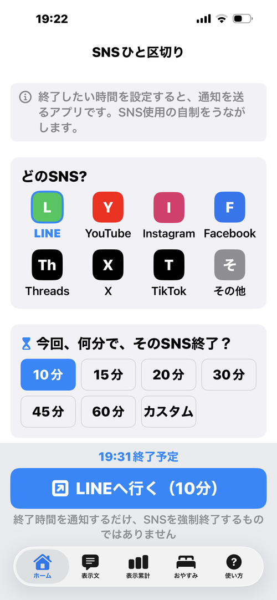
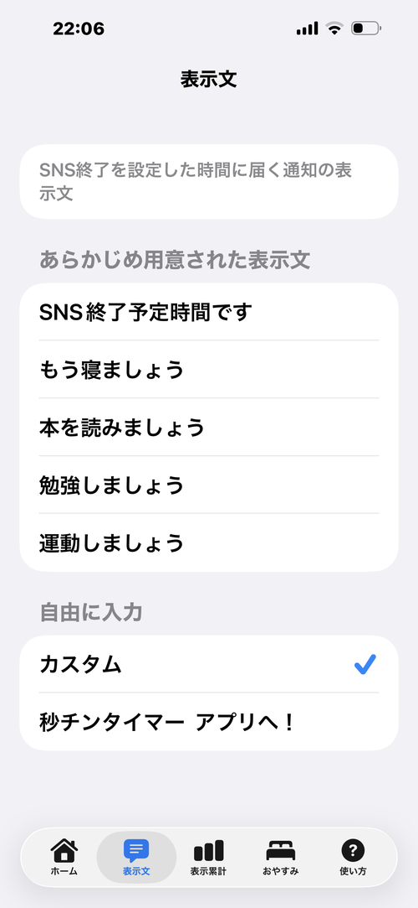
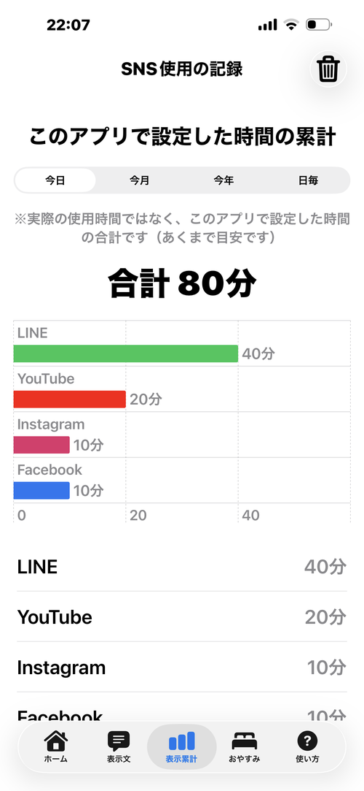

ホーム画面

表示文の選択

表示累計

おやすみ設定
「あと少しだけ」のつもりが、いつの間にか長時間に。
SNSひと区切りは、終了したい時間を設定すると、通知でお知らせするアプリです。SNS使用の自制をうながします。
自分で時間管理できる方や、そもそもスマホに時間を割かない方には、無用のアプリです。
ついつい見てしまって、やめられない方のための「気づかせ役」として作りました。
かんたん3ステップ
終了時間を通知するだけで、SNSを強制終了するものではありません。新しく時間を設定すると、まだ届いていない前回分の通知は自動的にキャンセルされるので、二重に通知が来る心配はありません。
Q. 通知が来たら、SNSは自動で閉じますか？
A. いいえ、閉じません。通知でお知らせするだけです。終了するのはご自身で行ってください。
Q. SNSへ行った後、別のアプリを使っていても通知は届きますか？
A. はい、届きます。他のアプリに切り替えたり、iPhoneをロックしたりしても、設定した時間になれば通知は予定どおり表示されます。
Q. 「おやすみ」タブは何ができますか？
A. 毎日の就寝時間を決めると、指定した時間だけ前にリマインダー通知が届きます。「今日の設定」から、期間を指定して「オフにする」や「変更」に切り替えることもできます。
その他のご質問は、アプリ内の「使い方」タブでも詳しくご案内しています。

ホーム画面

表示文の選択

表示累計
おやすみ設定